Polimento · Bloco A
15/10/2026. Consertos sem arte nova, já aplicados no jogo e sem commit. As fotos de “antes” e “depois” são do jogo jogado até o mesmo instante; inimigos e peças de cenário são sorteados, então não ficam idênticos entre uma foto e outra.
Item 1 · As silhuetas antigas da F4
FEITOSaíram as bandas de chão e teto e as vigas de primeiro plano
- Mudança
- As três camadas
derelictdobuildInteriorsaíram. Uma nota no código explica por quê e pede para não religá-las. O primeiro plano próprio da F4 fica para a rodada de geração. - Conferido
- A sonda da F4 agora cobra zero
derelictna tela e passa. As outras 4 falhas dela já existiam antes da mudança (rodei com e sem): é a sonda que ficou velha, não o jogo.
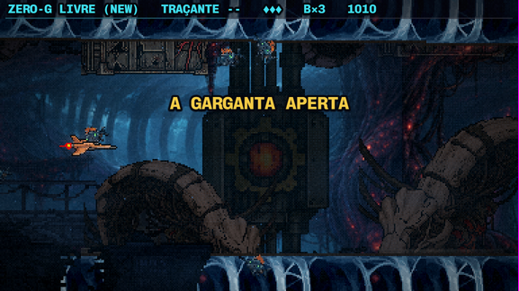
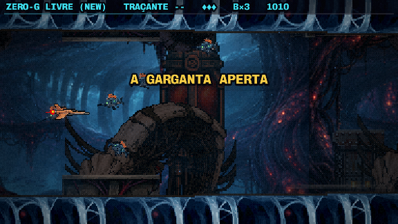
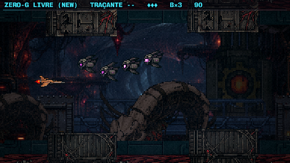
Item 5 · As caixas pretas no céu
FEITOF3 sem o cemitério da F2; o cinturão com as pontas desfeitas
- F3
- Os cascos de nave e o cinturão agora entram só na F2. Na F3 eles ficavam por cima da pintura da nebulosa. O casco escuro virava um retângulo preto, e o cinturão repetia o cenário da fase anterior. As pedras soltas continuam nas duas fases.
- F2
- As duas peças do cinturão (
beltebelt-2) agora se esfarelam nas pontas em vez de terminar num corte reto. O desgaste é feito em pixel, pedra por pedra, sem transparência pela metade. Os originais ficaram emassets/raw/.
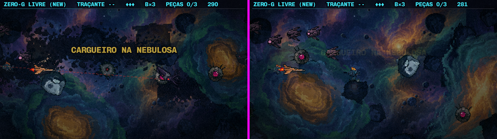
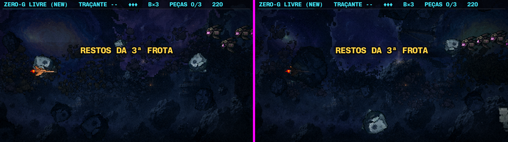
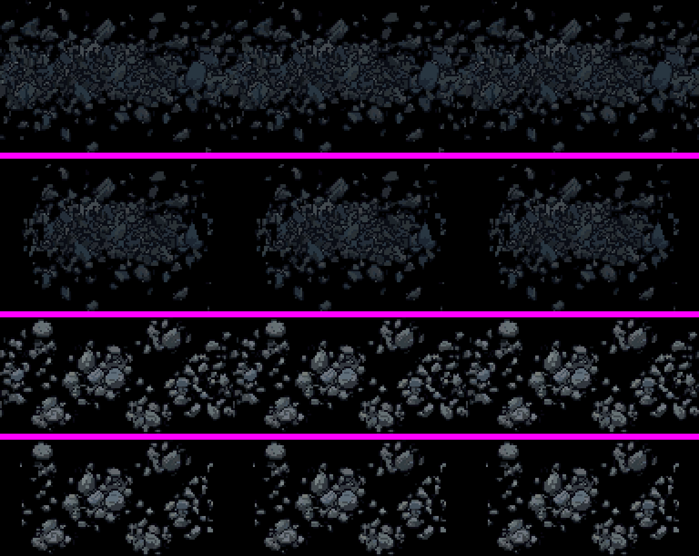
belt-2 antes / depois, belt antes / depois.A costela do meio da F4
FEITOOs cabos que batiam na borda do quadro agora terminam em ponta
- Mudança
- Cada cabo que encostava na borda da imagem recua por um comprimento diferente, então as pontas nunca se alinham numa linha reta. A ponta afina e ganha o contorno escuro do próprio cabo. O osso e o crânio não foram mexidos. O original ficou em
assets/raw/.
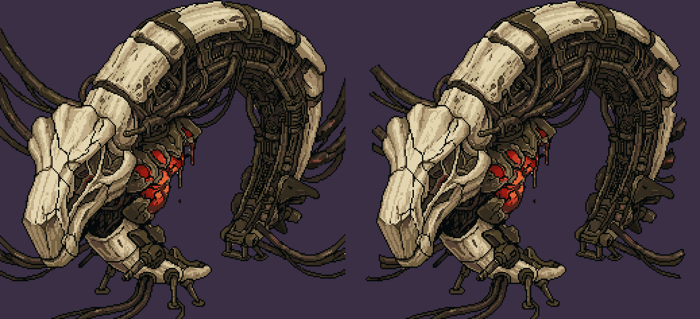
Itens 2 e 3 · As emendas do duto e das costelas azuis
FEITOAs duas peças agora emendam com elas mesmas
- Como
-
- O degradê da esquerda para a direita foi aplainado.
- A peça foi deslocada meia largura. Assim as pontas viram colunas que já eram vizinhas no desenho e emendam sozinhas.
- A antiga costura, que foi para o meio, foi repintada por inpaint no PixelLab, com o resto da peça congelado. No duto, a faixa de lava agora continua de uma peça para a outra.
- Forma
- Intocada. Muda só o PNG, com o mesmo tamanho e 100% opaco. Os degraus, a colisão e a altura das placas são os mesmos.
- Medida
- Duto: as pontas tinham brilho 32 × 7 e agora têm 19,8 × 20,7. A diferença entre as duas colunas da emenda caiu de 80,5 para 36 por linha. Costelas: de 38,9 para 16,9.
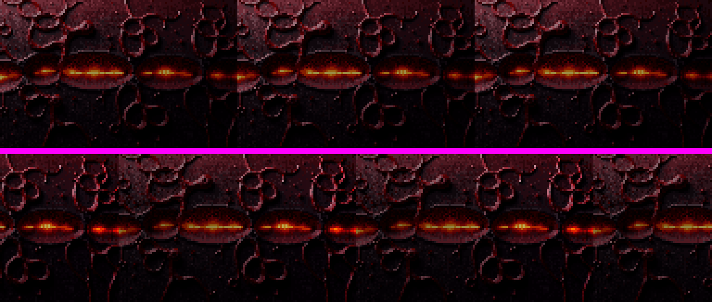
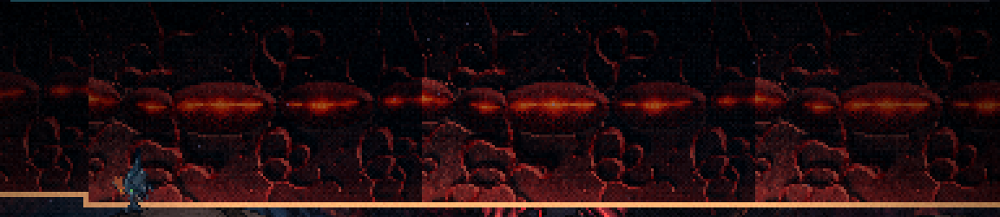
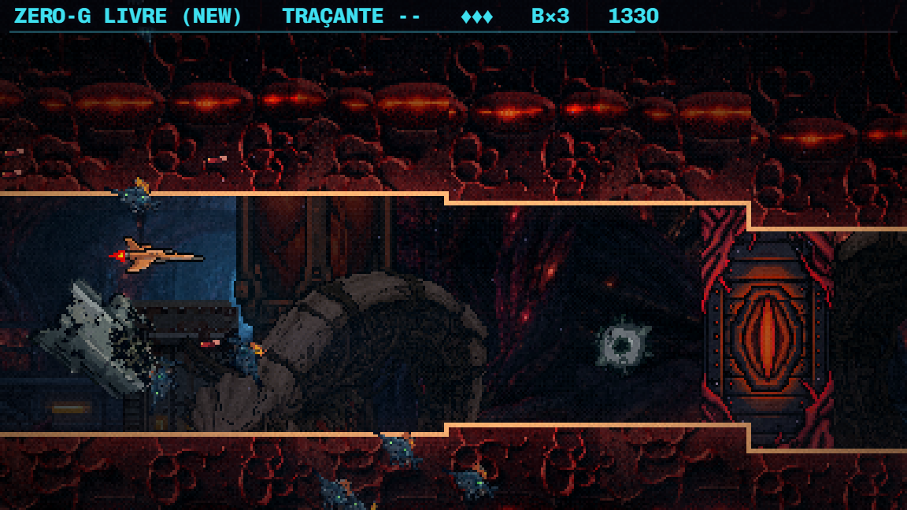
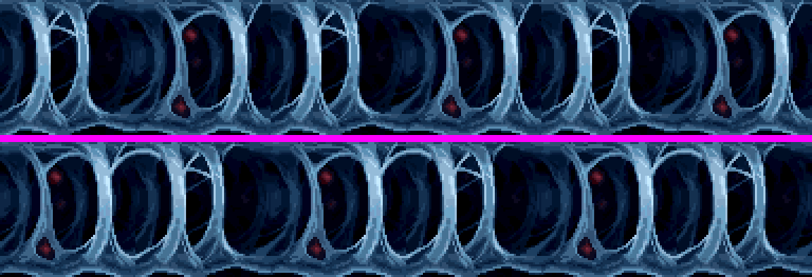
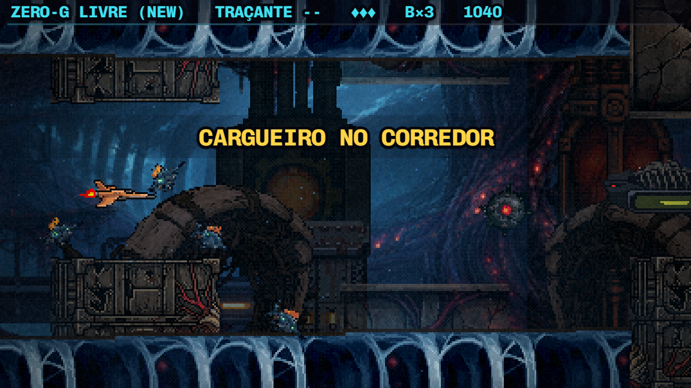
Item 4 · O fim do duto
PARA DECIDIRProposta: resolver junto com o esfíncter (bloco B)
Investigando ao vivo, o fim do duto, o pilar da junta e o esfíncter acontecem nos mesmos 3 segundos e no mesmo lugar da tela. A pintura nova já entra com uma passagem suave de 112px, então a “linha reta” do relatório não era a pintura. O que lê como corte é a soma de três coisas:
- a parede do duto terminando reta no pilar;
- o pilar de pedra sozinho, sem nada orgânico em volta;
- o esfíncter passando por trás do pilar.
A proposta é desenhar essa soleira como uma peça só. O esfíncter fica preso no tecido, com raízes em cima e embaixo, como o pé do Tubo, e na frente do pilar. As raízes também cobrem o fim da parede. Assim o item 4 sai junto com o bloco B, sem consertar a mesma tela duas vezes.